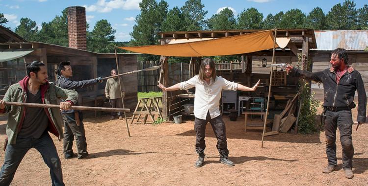

'The Walking Dead': Knots Untie Review
"Knots Untie" introduces a new community and a new enemy to The Walking Dead all at once. Albeit a pretty chill episode for a show about killing the dead, it is bound to be the calm before the storm that is Negan and the Saviors.
Personally I am pretty happy that Jesus turns out to be a good guy. Not going to lie, I have joined the ranks of the Jesus fangirls. Actor Tom Pain’s eyes are just too pretty.
But in all seriousness, Jesus and his dreamy eyes will be a really good asset to Alexandria. He is a trusted leader and peacemaker whose first priority is his own people, a characteristic that aligns with Rick’s values. I would definitely say his importance to the Hilltop community undermines that of Gregory The Rude, who pales in comparison to Jesus’s leadership and diplomacy capabilities. Pain discusses his character’s finesse on the post-show episode of Talking Dead.
So Jesus is a good addition to Rick’s camper kill team. If he looks out for everyone the way he cares for the Hilltop then things should be A-OK. Then we have Rick, Michonne, Abraham and Daryl, all ruthless killers. One of my favorite moments from this episode is Rick’s “What?” after he kills Ethan. Savage. Initially I laughed and silently congratulated Rick for doing what is obviously necessary, but then I stepped back. That one scene really puts the characters and the audience into perspective. After years for the characters and seasons for us, we have become desensitized as they traverse their ravaged world. They have accepted this violence as part of who they are, and they are not afraid to capitalize on it. Even Maggie and Glenn, who are debatably peaceful compared to the rest of the group, accept the kill Negan mission. In fact, Maggie negotiates the exchange with Gregory, revealing her PR talents.
Her communication skills prove top-notch, even when she gets down to business and starts wielding threats. She is truly following in Deanna’s footsteps. Lauren Cohan feels the change too, and elaborates on her role as Maggie on Talking Dead.
Speaking of the little tike on its way, the only one who seems caught up in Maglenn’s baby is Abraham. The awkward Bisquick comment is one example of his episode-long internal battle about settling down. His interest in Sasha is peaking, and the ginger brute keeps thinking of her even when he is in bed with Rosita. He even hears Sasha as a traitorous Hilltop citizen chokes the life out of him. Abraham’s struggle to come to terms with new world babies reflects his struggle between Sasha and Rosita. Apparently he comes to a decision by the end of the episode, and the necklace Rosita made him is left forebodingly in the grass after he recovers from that nasty chokehold. Well, as long as the good ship Richonne is still sailing.
Speaking of Richonne though, I am entirely too happy the ship receives the Carl stamp of approval. It is a small thing among a very plot-progressive episode, but it highlighted the officialness of their relationship (and hopefully the permanence). That family is too cute.
Let us just hope that everything remains hunky dory as our favorite RV squad rolls out to do some butt-kicking. It will be that simple, right?